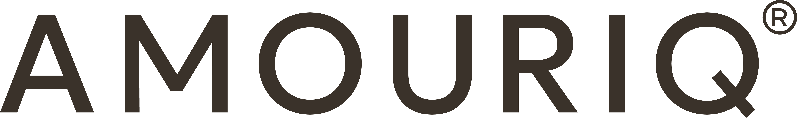

Organic Olive Castile Soap ที่ AMOURIQ พัฒนาขึ้นโดยมุ่งการดูแลผิว
โดยเฉพาะ พร้อมผลการประเมินในอาสาสมัคร* เพื่อดูว่า หลังล้างแล้ว เกิดอะไรขึ้นกับความชุ่มชื้นและการสูญเสียน้ำของผิว
เพราะผลิตภัณฑ์ทำความสะอาดที่ใช้ทุกวัน ไม่ควรจบหน้าที่เพียงตอนที่ล้างออก
มาตรฐานอุตสาหกรรมเอส มอก. เอส 14-2562 แยกคำว่า “สบู่เหลวแท้” และ “สบู่เหลวผสม” ออกจากกันอย่างชัดเจน — สบู่เหลวแท้มีเกลือของกรดไขมันจากน้ำมันหรือไขมันเป็นองค์ประกอบสำคัญ ส่วนสบู่เหลวผสมมีสารลดแรงตึงผิวสังเคราะห์ร่วมด้วย (ข้อ 3.3.1: สบู่เหลวแท้ต้องไม่พบสารลดแรงตึงผิวสังเคราะห์)
แต่เป็น product identity ที่มีนิยามให้ตรวจสอบได้ — เราหยิบนิยามทางเคมีของคำว่า “สบู่เหลวแท้” จาก มอก. เอส 14-2562 มาใช้เป็นเกณฑ์วัดคุณภาพของเราเอง เพราะตรงกับสิ่งที่เราอยากพิสูจน์ให้เห็นมากที่สุด
ดูนิยามที่เราอ้างอิงAMOURIQ ไม่ได้หยุดอยู่ที่วัตถุดิบ สูตร หรือคำว่า Castile เราเลือกทดสอบ
ผลิตภัณฑ์สำเร็จรูปบนผิวจริง
หลัง 8 ชั่วโมง ความชุ่มชื้นยังสูงกว่าก่อนใช้ +9.27%
ผลหลัง 1, 4 และ 8 ชั่วโมงแตกต่างจากก่อนใช้อย่างมีนัยสำคัญทางสถิติที่ระดับความเชื่อมั่น 95%
สบู่ที่ดีสำหรับ AMOURIQ จึงไม่ควรจบหน้าที่แค่ตอนที่ล้างออก
ค่า TEWL หลัง 1, 4 และ 8 ชั่วโมงต่ำกว่าก่อนใช้ อย่างไรก็ตาม ความแตกต่างเมื่อเทียบกับก่อนใช้ไม่ถึงนัยสำคัญทางสถิติในการศึกษานี้ และรายงานสรุปว่าไม่พบผลที่แสดงว่าผลิตภัณฑ์ทำลายเกราะป้องกันผิว
ค่า TEWL หลังใช้ ไม่แตกต่างจากก่อนใช้อย่างมีนัยสำคัญทางสถิติ → รายงานสรุปว่า ผลิตภัณฑ์
ไม่พบผลทำลายเกราะป้องกันผิว และช่วยรักษาความชุ่มชื้นไว้ได้จนถึงช่วงประเมิน 8 ชั่วโมง
เราจึงเลือกใช้คำว่า BARRIER-FRIENDLY ไม่ใช่ “Repair / Restore / Rebuild Skin Barrier”
เพราะผลที่มีไม่ได้ทดสอบ claims เหล่านั้น
Potassium Hydroxide (KOH) เป็นส่วนหนึ่งของสูตรที่ใช้ในการทำสบู่ AMOURIQ
แต่คำถามที่สำคัญกว่าคือ หลังผลิตเสร็จ มีด่างอิสระเหลืออยู่หรือไม่?
คุณภาพของกระบวนการ ควรมีสิ่งที่ตรวจสอบได้ในผลิตภัณฑ์สำเร็จรูป
‡ ผลทดสอบเคมีพื้นฐานของเนื้อสบู่ (ด่างอิสระ) ทดสอบจากสูตรเนื้อสบู่พื้นฐานเดียวกันที่ใช้ผลิต Organic Olive Castile Soap ทุกกลิ่น (สุ่มตัวอย่างจากแบทช์กลิ่น Rosemary) ก่อนแบ่งเติมน้ำมันหอมระเหยแยกตามกลิ่นในขั้นตอนสุดท้าย
ตรวจพบในผลิตภัณฑ์สำเร็จรูป กลิ่น Lavender
ตรวจพบในผลิตภัณฑ์สำเร็จรูป กลิ่น Lavender
Squalene และ Beta-carotene ทดสอบจากตัวอย่างกลิ่น Lavender โดยตรง ส่วน Glycerine และ Alpha-tocopherol‡ ทดสอบจากสูตรเนื้อสบู่พื้นฐานร่วม (ดูหมายเหตุ ‡ ด้านบน)
เราไม่จำเป็นต้องเดาว่าสารตัวไหนทำให้เกิดผลลัพธ์ใด เพราะเราทดสอบผลิตภัณฑ์สำเร็จรูปทั้งสูตรกับผิวจริง
เราไม่ได้ต้องการสร้างสบู่ที่พยายามทำทุกอย่าง แต่ต้องการพัฒนา Castile Soap สำหรับการดูแลผิวโดยเฉพาะ
Thoughtful Care สำหรับเรา เริ่มตั้งแต่ก่อนผลิตภัณฑ์จะมาถึงมือคุณ
กลิ่นลาเวนเดอร์มาจากน้ำมันหอมระเหยสองตัวตามสูตรจดแจ้ง — Lavandula Angustifolia Oil ให้กลิ่นดอกลาเวนเดอร์ที่นุ่มและกลม และ Lavandula Hybrida Oil ให้ปลายกลิ่นสดแบบสมุนไพร ไม่มีน้ำหอมสังเคราะห์เพิ่ม
From nature, without needing to make it louder than it is.
หมายเหตุ: ไม่ใช้คำว่า “Fragrance-Free” เพราะ Lavender SKU มี essential oils ที่ให้กลิ่นจริง
ชุ่มชื้นเพิ่มขึ้น · สูญเสียน้ำน้อยลง · เป็นมิตรต่อเกราะป้องกันผิว
มอก. เอส 14-2562 นิยาม + Chemical Criteria (เกณฑ์อ้างอิงภายใน ไม่ใช่การรับรอง)
ผลทดสอบความชุ่มชื้นผิว โดยเครื่อง Corneometer® + ผลทดสอบการสูญเสียน้ำของผิวโดยเครื่อง Tewameter®
เลขที่ใบรับแจ้ง 3 รายการ
AMOURIQ เติบโตจากองค์ความรู้ด้าน Natural Oils และ Essential Oils ทีมเบื้องหลัง
เชื่อมมุมมองจากภูมิปัญญาแพทย์แผนไทยและเภสัชศาสตร์เครื่องสำอางสมัยใหม่
สิ่งเหล่านั้นบอกว่าความใส่ใจของเรามาจากไหน ส่วนคุณภาพของผลิตภัณฑ์ควรให้ผลทดสอบพูดแทน
เนื้อสัมผัส: ดี · ประสิทธิภาพ: ดี · กลิ่น: หอมอ่อน
“ชอบมากค่ะ อาบละผิวไม่แห้งเอี้ยด ปกติเป็นคนผิวแห้งมาก ใช้แล้วชอบเลยค่ะ กลิ่นก็ดี”
“ได้ทดลองใช้จากขวดขนาดทดลองที่ทางร้านแถมมาให้ รู้สึกประทับใจในสัมผัส ความหอม อาบสะอาด สดชื่น เลยสั่งขวดใหญ่มาใช้เลย ทางร้านบริการดีมากๆ จัดส่งรวดเร็ว”
วิธีใช้ final ควรตรวจให้ตรงฉลากที่ได้รับอนุมัติก่อนนำขึ้นเว็บไซต์จริง
สบู่เหลวทั่วไปส่วนใหญ่ผสมสารลดแรงตึงผิวสังเคราะห์ แต่สูตรของเรามีเกลือของกรดไขมัน ของน้ำมันจากพืช เป็นองค์ประกอบสำคัญ
ไม่ผสมสารลดแรงตึงผิวสังเคราะห์ (สารชำระล้าง) จึงเป็สบู่เหลวแท้ — อ้างอิงนิยาม "สบู่เหลวแท้" จาก มอก. เอส 14-2562
มั่นใจได้ว่า "ไม่มีด่างตกค้างระคายผิว" สบู่สำเร็จรูปผ่านการตรวจวัดด่างอิสระแล้ว: Not Detected
เพิ่มขึ้นจริง ยืนยันด้วยผลการทดสอบที่พบว่าความชุ่มชื้นผิวเพิ่มขึ้น 8.48%, 13.37% และ 9.27%
หลังใช้ 1, 4 และ 8 ชั่วโมงตามลำดับ มีนัยสำคัญทางสถิติสูงถึง 95%
หมายถึงผิวไม่แห้งตึงหลังอาบน้ำเหมือนสบู่ทั่วไป ค่า TEWL วัดได้ต่ำกว่าก่อนใช้ทุกช่วงเวลา
ค่า TEWL ต่ำกว่าก่อนใช้ 5.34%, 3.60% และ 10.67% ตามลำดับ
เพราะ TEWL หลังใช้ไม่ต่างจากก่อนใช้อย่างมีนัยสำคัญ และรายงานสรุปว่าไม่พบผลทำลายเกราะป้องกันผิว
เป็นสารสำคัญตามธรรมชาติที่ “ตรวจพบ” ในผลิตภัณฑ์สำเร็จรูป ไม่ใช่ส่วนผสมที่เติมเข้าไป
กลิ่น Lavender ได้จาก Lavandula Angustifolia Oil และ Lavandula Hybrida Oil ตามสูตรจดแจ้ง โดย Organic Olive Castile Soap
มี 3 กลิ่น คือ — Lavender, Rosemary และ Rose Geranium ทุกกลิ่นได้กลิ่นจากน้ำมันหอมระเหยจากพืชเท่านั้น
เป็นผลิตภัณฑ์ที่มีส่วนผสมที่มีเอกสารรับรองออร์แกนิก (Organic Certificate) ซึ่งออกโดยหน่วยงานที่เชื่อถือได้และเป็นที่ยอมรับระดับสากล
เช่น USDA, ECOCERT, IFOAM ในการจดแจ้งกับ อย. โดยใช้คำว่า "Organic" ในชื่อผลิตภัณฑ์
ยังไม่มีข้อมูลทดสอบเฉพาะกลุ่มผิวแพ้ง่าย หากมีประวัติผิวระคายเคืองง่าย, แพ้ง่าย แนะนำทดสอบบนผิวเล็ก ๆ หรือปรึกษาแพทย์ผิวหนัง
ก่อนใช้จริง
AMOURIQ เป็นราคาที่เข้าถึงได้ ไม่ใช่ระดับหรูหรา — แต่ต่างจากสบู่เหลวทั่วไปเพราะเป็นสบู่เหลวแท้ที่พัฒนาสูตร "เพื่อผิวโดยเฉพาะ"
และมีผลทดสอบยืนยันประสิทธิภาพ ให้คุณได้รับความมั่นใจที่พิสูจน์ได้ ไม่ใช่แค่ภาพลักษณ์
จัดส่งภายใน 1-2 วันทำการ หลังจากได้รับชำระเงินค่าสินค้าเรียบร้อยแล้ว
100% REAL SOAP† ที่ตั้งใจพัฒนาขึ้นเพื่อผิวโดยเฉพาะ
MOISTURE ↑ ผิวชุ่มชื้นเพิ่มขึ้น · WATER LOSS ↓ การสูญเสียน้ำลดลง · BARRIER-FRIENDLY เป็นมิตรต่อเกราะป้องกันผิว
FREE ALKALI‡ NOT DETECTED และการตรวจผลิตภัณฑ์สำเร็จรูปที่พบ Squalene · Beta-carotene · Glycerine‡ · Alpha-tocopherol‡